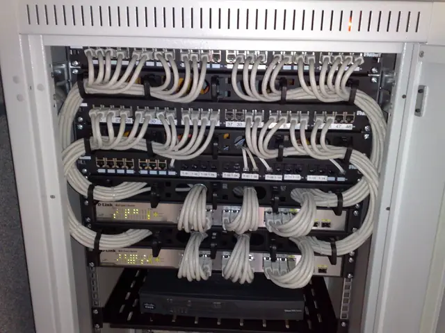
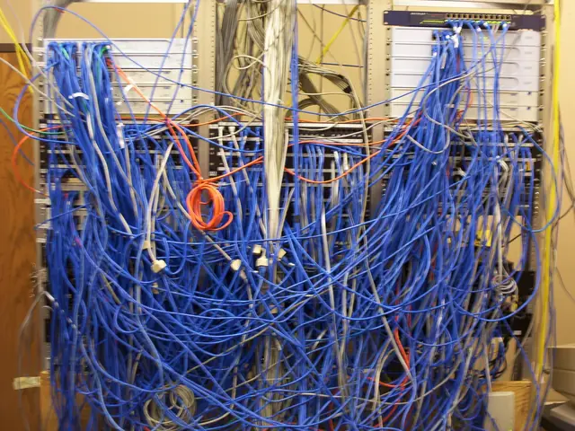

Plantão: seg a sex, 8h às 18h
Sua empresa não deveria parar por causa de um cabo.
Cuidamos de computadores, rede, backup e segurança de escritórios, clínicas e lojas que não têm equipe de TI. Você abre um chamado, um técnico responde.


Prazos e condições são os da marca fictícia, descritos na página de planos.
O que fazemos
Quatro frentes, uma conta só
- 01
Backup que restaura
Cópia automática na nuvem e teste de restauração a cada trimestre. Você vê o relatório.
- 02
Rede e Wi-Fi
Cabeamento, roteador, rede separada para visitantes e monitoramento da internet.
- 03
Microsoft 365
E-mail, arquivos e Teams configurados, com verificação em 2 etapas e conta criada ou cortada no mesmo dia.
- 04
Segurança
Antivírus gerenciado, atualizações em dia e plano para o dia em que algo der errado.
Quando algo quebra
Um chamado, quatro passos
Você avisa
Pelo formulário ou WhatsApp, em uma frase. Sem número de protocolo para decorar.
Triagem
Um técnico classifica: urgente, normal ou dúvida. Urgente é quando ninguém consegue trabalhar.
Acesso remoto
Quase tudo se resolve à distância. Se precisar, vamos até você.
Registro
Cada chamado vira uma linha no relatório do mês: o que quebrou e o que mudou.

Foto: Derrick Coetzee, CC0, Wikimedia Commons. Imagem ilustrativa, não é equipe da marca.
Faça você mesmo, antes de falar com a gente
Duas ferramentas que funcionam sozinhas
A calculadora dá a faixa de preço mensal em 30 segundos. O check-up dá uma nota de segurança e lista o que corrigir primeiro.
Quer saber como está a TI da sua empresa?
Diagnóstico de 45 minutos, sem custo e sem compromisso. Você sai com uma lista do que corrigir, mesmo que não contrate.